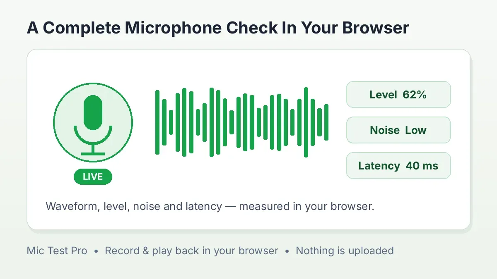
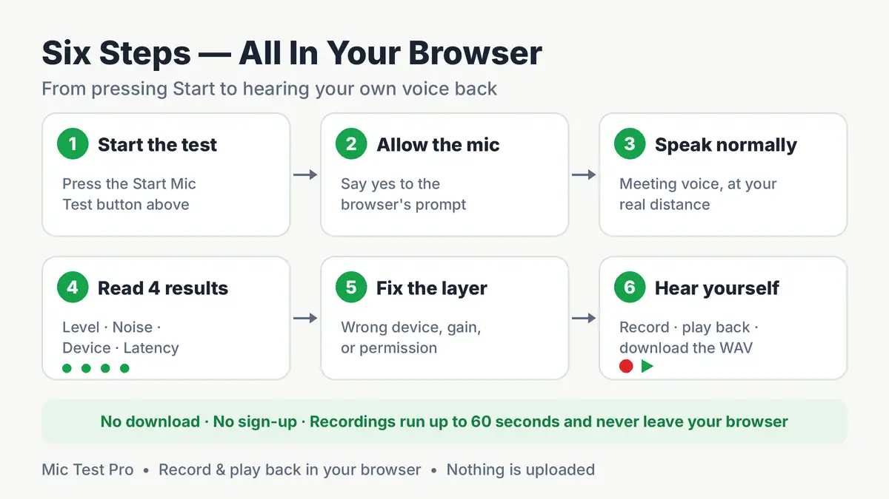
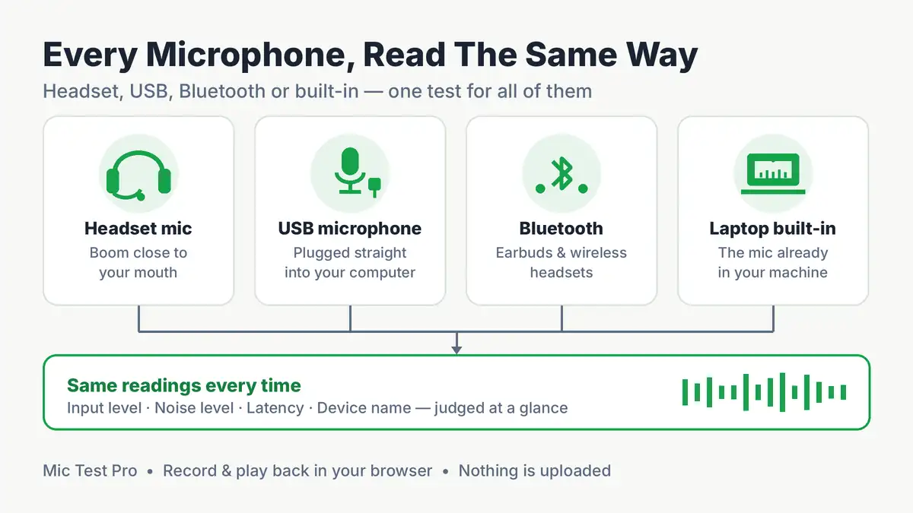
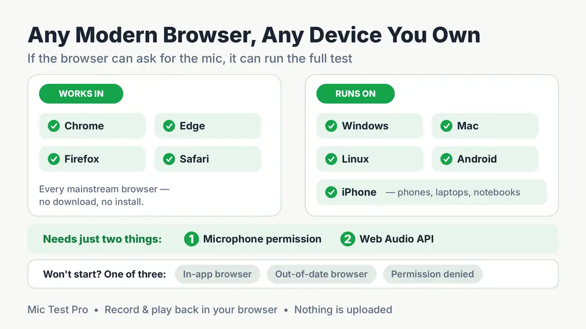

What Is A Microphone Test?
A microphone test helps you check whether your mic is working correctly. This mic test online detects your microphone directly inside the browser without installing software. You allow access, you speak, and you see and measure what your microphone is actually sending — a live waveform, an input level, a noise reading and a latency figure.

You can use this microphone checker to test voice clarity, audio input sensitivity, microphone volume, latency, and background noise before meetings, streaming, gaming, Discord calls, Zoom meetings, online classes, or recording sessions.
Its real value is separation. Every voice app — Zoom, Teams, Discord, your game, your recorder — adds its own microphone choice, volume and processing on top of your hardware. When your voice fails, any one of those layers can be responsible, and they all sound identical: silence, or mush. A browser test reads the layer underneath all of them. Pass here, and your mic, cable and system settings are proven good; whatever remains wrong lives inside one app's settings, and you can stop reinstalling drivers.
Fail here, and the opposite is true: no setting inside any app will rescue a microphone your computer itself cannot hear, so you fix the device, the connection or the system permission first — and this page's questions below walk through each.
How To Test Your Microphone Online
Testing your microphone online takes six quick steps, and every one of them runs right here in your browser.

Click the Start Mic Test button above.
Allow microphone permission in your browser when it asks. That prompt is the browser's security check, and the test cannot hear anything until you allow it. Blocked it earlier by mistake? The FAQ below explains how to undo that in the address bar.
Speak into your microphone at the volume and distance you will actually use — a meeting voice, not a stage voice — and watch the live sound meter and waveform respond.
Read the four results together: Input Level should move strongly with speech, Noise Level should stay low while you are silent, the Device line should name the microphone you meant to use, and Latency should sit in the low tens of milliseconds or less.
If a reading is wrong, fix that layer before opening your app: wrong device name means change the system input; high noise means move the mic closer, lower the gain, or quiet the room; no movement at all means permission or connection, in that order.
Want to hear how you actually sound? Press Record Voice, speak for a few seconds, then stop and listen to the playback. You can download the clip as a WAV file too — recordings run up to 60 seconds and never leave your browser.
Core Features
Whatever microphone you use — a headset, a USB mic, Bluetooth or the one built into your laptop — this test reads it the same way.

Real-Time Audio Detection
Detect live microphone input instantly, as you speak. No uploading and no waiting for a result file — the answer is on screen while the sound is still in the room. If you want to hear yourself, the optional Record Voice button records, plays back and downloads a short clip entirely inside your browser.
Noise Analysis
Check background noise levels while you sit in silence. This is the reading your meeting partners wish you could see: if it is high with nobody talking, your voice is competing with your room in every call.
Live Waveform
Visual microphone audio monitoring. A healthy waveform rises and falls with your sentences; a flat line means no signal, and a solid block means you are far too loud and distorting.
Latency Check
Measure microphone response delay. The reading is in milliseconds (ms): the delay between speaking and your browser receiving the sound, and lower is better. It matters for gaming, streaming and singing along to anything — and it is the one problem you cannot hear in your own headphones while it annoys everyone else.
Browser-Based Testing
No download or installation required. If your browser can open this page and ask for the microphone, it can run the full test — which also makes this the fastest check on a borrowed or work computer where you cannot install anything.
Privacy Friendly
Audio never leaves your browser. The analysis happens on your device with the Web Audio API, so you can test a microphone before a sensitive call without your voice touching a server.
Speaker Test
Check the listening side too. The Test Speakers button plays a short test sound through your chosen output, so you can confirm your speakers or headphones work before a call — a mic test and a speaker test on the same page.
Choose Your Microphone
More than one mic connected — a headset, a webcam, a USB mic? Pick the one you want from the Microphone dropdown before you start, so the test listens to the right device instead of whichever one the browser found first.
Hear Yourself Live
Turn on Hear Yourself to monitor your own voice live while you speak, the way your listeners hear it. Use headphones for this — on speakers, your mic picks up the sound coming out and you get echo.
Your Test Result
While the test runs, the result card gathers your readings in one place — input level, noise level, latency and device name — so you can judge the whole picture at a glance. The spectrum bars beside it show your voice by pitch, bass on the left and treble on the right.
Benefits Of Using This Mic Tester
- Test your microphone before online meetings.
- Check gaming headset microphone quality.
- Improve streaming and recording setup.
- Detect audio distortion and low volume.
- Verify browser microphone permissions.
Why This Tool Is Helpful
| Feature | This Tool | Basic Tools | What It Tells You |
|---|---|---|---|
| Live Audio Meter | Yes | Limited | Whether your mic hears you at all |
| Waveform Visualizer | Yes | No | Flat line means no signal; a solid block means distortion |
| Noise Detection | Yes | No | Whether your room competes with your voice |
| Works In Browser | Yes | Yes | No install needed on any computer |
| Device Name Identified | Yes | No | Which microphone is actually live |
| Latency Measurement | Yes | No | Your mic delay in milliseconds |
Why Use This Online Microphone Tester?
This free mic test tool is useful for gamers, students, streamers, podcasters, remote workers, and anyone using online voice communication. It earns its place in one moment: the two minutes before something important, when "can you hear me?" is not an acceptable opening line.
The tool works directly in modern browsers using the Web Audio API and microphone permission system. You can test USB microphones, headset microphones, Bluetooth microphones, laptop microphones, and external audio devices instantly — and because the test sits below every app's own settings, its verdict tells you where a problem lives, not just that one exists.
For a specific app or device, use the dedicated tests on this site: the Zoom and Discord pages speak those apps' settings language, the gaming page covers headsets and Steam, and the Bluetooth and USB pages handle the two connection types with the strangest failure modes. This page remains the neutral first check for all of them.
Which Browsers And Devices Does This Mic Test Work With?
Short answer: any modern browser on any device you own — Chrome, Edge, Firefox or Safari, running on Windows, Mac, Linux, Android or iPhone.

The test needs exactly two things from your browser: the ability to ask for microphone access, and the Web Audio API to analyse the stream. The microphone request uses navigator.mediaDevices.getUserMedia(), which only works in secure contexts — on plain HTTP the browser reports no microphone at all. The browser must ask your permission first and shows a mic-in-use indicator while the test runs. Both have been standard in mainstream browsers for years, so a failure to start almost never means an unsupported browser. It usually means one of three things: the page was opened inside another app's built-in browser (messaging and social apps do this, and their mini-browsers often cannot use the microphone — open the page in your full browser instead), the browser is out of date, or microphone access for this site was denied earlier and stayed denied.
On phones the same test covers the built-in microphone, wired earbuds and Bluetooth headsets. The phone decides which microphone is live, and it does not always choose the one you are holding — which is why the tap test appears throughout this site: tap the headset, then tap the phone, and the tap that moves the meter is the microphone you are really using. Wired earphones with a mic on the cable work the same way: plug them in, allow access, and run the test.
On a laptop or notebook, the same test checks the built-in microphone, a wired headset or a USB mic. The test runs in your browser, so it works on Windows 10 and Windows 11 with nothing to install.
Testing Your Microphone On Windows 11
Short answer: set the right input in Settings > System > Sound, confirm Windows itself can hear you with the built-in Start test, then run this test — in that order.
For the full walkthrough, see our dedicated Windows 11 Mic Test guide: the built-in test step by step, both layouts it can have, what the result really means, and the three privacy switches that can silence your mic.
Frequently Asked Questions
Is this mic test free?
Yes, this mic test site is completely free. There is no sign-up, no download and no limit on how many times you can test.
Does this tool record audio?
Only when you press Record Voice. Audio stays inside your browser. The test analyses your microphone stream on your own device to draw the waveform and calculate the readings. If you record, the clip is created and kept only in your own browser so you can play it back or download it — nothing is uploaded or stored on any server.
Which browsers can I use for this mic test?
Any modern browser that can ask for microphone access: Chrome, Edge, Firefox and Safari, on Windows, Mac, Linux, Android and iPhone. If the Start button does nothing, the browser is usually too old, in a private or in-app browser window (for example, a browser inside a social media app), or the site has been denied microphone access before — open the page in your main browser and check the permission in the address bar.
Can I test my microphone on my phone?
Yes. Open this page in your phone's browser, tap Start Mic Test and allow microphone access. It works for the built-in phone mic and for connected headsets and earbuds. One phone habit to watch: phones switch to whichever microphone was connected last, and Bluetooth earbuds may be selected for sound but not for voice — if the level does not move when you speak into the headset, tap near the headset and then near the phone; whichever tap spikes the level is the live mic.
Why does the browser ask for microphone permission — and what if I blocked it?
The browser asks because no website may listen to your microphone without your say-so; that permission popup is the security system working, and this test cannot start without it. If you clicked Block by mistake, the test will stay silent forever until you undo it: click the lock or site-settings icon in the address bar, find Microphone, change it to Allow, and reload the page. On Windows also check Settings > Privacy & security > Microphone is on for your browser; on a Mac, System Settings > Privacy & Security > Microphone.
Can I test a USB microphone?
Yes, USB microphones are supported — plug the mic in before you start the test so the browser can offer it, and check that the Device reading on this page names your USB mic. If your USB mic misbehaves (not detected, buzzing, vanishing mid-call), the dedicated USB microphone test page has a full troubleshooting table for exactly those problems.
Why is my microphone not detected?
Check browser permission settings and device connection first — a blocked permission and an unplugged or unselected device cause most cases. Then check the system level: in Windows, Settings > System > Sound > Input should list and show your mic reacting; on a Mac, System Settings > Sound > Input. If the system cannot see the mic, no website can. If the system sees it but this page does not, the browser permission is the blocker — reset it as described in the permission question above.
My mic works in this test but not in Zoom or Teams — why?
Because those apps keep their own microphone choice and do not always follow your system or browser. Your hardware just passed here, so go straight to the app's audio settings and pick the same microphone by name instead of leaving it on a default that may point at a webcam or a disconnected headset. There is a dedicated Zoom mic test page on this site with the exact Zoom settings and fixes, if Zoom is your problem app.
How do I know if my microphone quality is good enough?
Use the three readings together. Input level: normal speech should move the meter strongly without sitting pinned at the very top (that is distortion). Noise level: stay silent for a few seconds — the reading should stay low; a high silent reading means your listeners hear your room as much as you. Latency: lower is better, and anything in the low tens of milliseconds is fine for calls and meetings. If all three behave at your normal speaking distance and volume, your quality is good enough for meetings, classes, streaming and gaming — the remaining differences between microphones are taste, not problems.
Can I hear a playback of my voice with this test?
Yes. This test shows your microphone live — the waveform, input level, noise level and latency — and with the Record Voice button you can record a short clip, play it back and download it, all inside your browser. For a final check inside a specific app, you can still use the app's own check: a Teams test call, Discord's Let's Check mic test, or a Zoom test meeting.
Can I test my microphone volume here?
Yes — the input level reading is your live volume meter. Speak at your normal volume and watch it move: it should rise strongly without staying pinned at the very top. If it barely moves, raise the input volume in your system sound settings — in Windows, Settings > System > Sound > Input; on a Mac, System Settings > Sound > Input — then test again.
Is my mic on?
Start the test above, allow microphone access, and speak. If the waveform and input level move when you talk, your mic is on and the browser can hear it. While the test runs, your browser also shows a mic-in-use indicator, which is another sign the microphone is live. If nothing moves, the mic may be muted, blocked by the browser permission, or the wrong device may be selected — the readings and the Device line on this page show which.
Is my mic working?
Speak at your normal volume and watch three things: the waveform moves with your voice, the input level rises strongly without staying pinned at the top, and the Device line names the microphone you meant to use. If all three behave, your mic is working. If the level stays flat, check the browser permission first, then the connection and the selected device — the question above about a microphone not being detected walks through the order.
Can I test my speakers with this tool too?
Yes. Press the Test Speakers button and the tool plays a short test sound through your chosen output, so you can check your speakers or headphones on the same page as your microphone. If you hear the sound clearly in both ears, the listening side works; if you hear nothing, check the output device and volume in your system sound settings.
Recommended Microphones
If the test above shows your current mic is weak, noisy or faulty, these are the two budget upgrades worth looking at first. Test your new mic here when it arrives to check it works properly.
USB Microphones
Best for: meetings, classes, streaming and recording at a desk. Plugs straight into your computer — no extra equipment needed, and usually a big step up from a laptop's built-in mic.
See USB microphones on AliExpress →
Headsets with a Mic
Best for: gaming and long calls. The mic sits close to your mouth, so your voice stays clear and room noise stays low — and you hear the game or call at the same time.
See headsets with mics on AliExpress →
Affiliate note: the links above go to AliExpress. If you buy through them, this site may earn a small commission at no extra cost to you. It helps keep this mic test free.